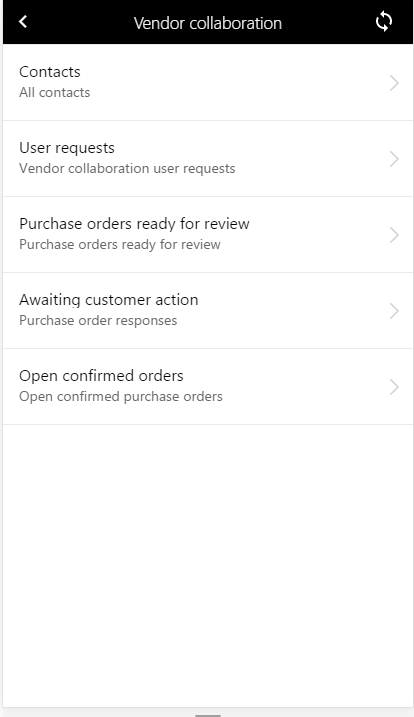

Mobiler Arbeitsbereich für Kreditorenzusammenarbeit
Important
Dynamics 365 for Finance and Operations hat sich zu speziell entwickelten Anwendungen entwickelt, mit denen Sie bestimmte Geschäftsfunktionen verwalten können. Weitere Informationen zu diesen Änderungen finden Sie im Dynamics 365-Lizenzierungshandbuch.
Dieses Thema enthält Informationen zur Lieferantenzusammenarbeit im mobilen Arbeitsbereich. Dieser Arbeitsbereich hilft Kreditoren, auf dem neuesten Stand der Bestellungen zu sein, die ihnen zur Genehmigung gesendet wurden. Sie können auch Informationen zu neuen und aktualisierten Bestellungen und Kontakten anzeigen.
Dieser mobile Arbeitsbereich soll mit der Finance and Operations Mobile-App verwendet werden.
Übersicht
Der Arbeitsbereich für die Kreditor-Kooperation hält Kreditoren über neue Bestellungen auf dem Laufenden, sodass diese neue Bestellungen im Webclient sehen und auf diese reagieren können.
Note
Der mobile Arbeitsbereich sollte als Ergänzung und nicht als Ersatz der Weboberfläche für die Kreditor-Kooperation eingesetzt werden.
Mit dem mobilen Arbeitsbereich der Kreditor-Kooperation können Kreditoren neue Bestellungen anzeigen, die ihnen zur Genehmigung übermittelt wurden. Er zeigt Bestellinformationen wie Menge und Produkte sowie das angeforderte Versanddatum an. Preisangaben sind je nach Konfiguration für den jeweiligen Kreditor verfügbar.
Wenn sich Benutzer als Kreditor anmelden, sehen sie, auf welche Bestellungen reagiert wurde und für welche Bestellungen noch Debitorenaktivitäten ausstehen. Der Kreditor hat möglicherweise ein anderes Lieferdatum vorgeschlagen, dem der Debitor noch nicht zugestimmt hat, sodass die Bestellung auf eine Debitorenaktivität wartet. Der Kreditor sieht auch eine Liste der Bestellungen, die bestätigt aber noch nicht geliefert wurden.
Um auf eine Bestellung zu antworten, muss der Kreditor die Weboberfläche für die Kreditor-Kooperation verwenden, die im Webclient verfügbar ist. Dort findet der Kreditor auch zusätzliche Informationen zum Auftrag, wie Dokumentanhänge, Lieferadresse pro Position sowie Zuschläge, die dem Kreditor zugeordnet wurden.
Mit einer speziellen Sicherheitsrolle kann sich der Kreditor Kontaktpersonen anzeigen lassen, die für ein Kreditorenkonto registriert sind. Mit der gleichen Sicherheitsrolle kann der Kreditor den Status jeder Benutzeranforderung anzeigen, die gesendet wurde.
Die Kreditorenzusammenarbeitsoberfläche im Webclienten muss verwendet werden, um zu neue Kontakte neue Benutzeranforderungen zu erstellen.
Der mobile Arbeitsbereich Kreditorenzusammenarbeit ermöglicht einem Kreditor diese Aufgaben ausführen:
- Neue Bestellungen anzeigen, die an den Kreditor gesendet wurden.
- Bestellungen anzeigen, auf die der Kreditor reagiert hat und die auf eine Debitorenaktivität warten.
- Bestellungen anzeigen, die bestätigt wurden aber noch nicht vollständig empfangen wurden.
- Hier werden Kontaktpersoneninformationen angezeigt, die für das Kreditorenkonto erfasst wurden. (Diese Aufgabe ist eine zusätzliche Sicherheitsrolle.)
- Informationen anzeigen und den Status einer Benutzeranforderung verfolgen, die vom Kreditor übermittelt wurde. (Diese Aufgabe ist eine zusätzliche Sicherheitsrolle.)
Voraussetzungen
Die Voraussetzungen unterscheiden sich basierend auf der Version von Microsoft Dynamics 365, die für Ihre Organisation bereitgestellt wurde.
Voraussetzungen, wenn Sie verwenden Supply Chain Management
Wenn Supply Chain Management für Ihre Organisation bereitgestellt wurde, muss der Systemadministrator den mobilen Arbeitsbereich Kreditor-Kooperation veröffentlichen. Anweisungen finden Sie unter Einen mobilen Arbeitsbereich veröffentlichen.
Voraussetzungen, wenn Sie Microsoft Dynamics 365 for Operations Version 1611 mit Plattformupdate 3 oder höher verwenden
Wenn Microsoft Dynamics 365 for Operations Version 1611 mit Plattformupdate 3 oder höher für Ihre Organisation bereitgestellt wurde, muss der Systemadministrator die folgenden Voraussetzungen erfüllen.
| Voraussetzung | Rolle | Beschreibung |
|---|---|---|
| 3216943 KB muss implementiert werden, wenn Sie Plattformaktualisierung 3. verwenden. | Systemadministrator | 3216943 KB ist eine binäre Aktualisierung, die erforderlich ist, wenn Sie Plattformaktualisierung 3. verwenden. Um diesen KB zu implementieren, muss Ihr Systemadministrator folgende Schritte ausführen.
|
| 4013633 KB muss implementiert werden. | Systemadministrator | 4013633 KB ist ein X++-Aktualisierungs- oder -Metadatenhotfix, der den mobilen Arbeitsbereich Lagerbestand enthält. Um KB 4013633 muss Ihr Systemadministrator folgende Schritte ausführen.
|
| Die Kreditoren-Kooperation mobiler Arbeitsbereich muss veröffentlicht werden. | Systemadministrator | Siehe Einen mobilen Arbeitsbereich veröffentlichen. |
| Der Kreditorenbenutzer muss Zugriff auf die Weboberfläche für die Kreditor-Kooperation im Webclient haben und muss als Keditor-Kooperations-Benutzer eingerichtet werden. | Einkäufer und Systemadministrator | Führen Sie die Schritte, die in den folgenden Themen beschrieben werden, aus, um die Weboberfläche für die Kreditor-Kooperation einzurichten und mit dieser zu arbeiten. |
Herunterladen und Installieren der mobilen App
Herunterladen und Installieren der Finance and Operations mobilen App:
Bei der mobile App anmelden
Starten Sie die App auf Ihrem mobilen Gerät.
Geben Sie die Microsoft Dynamics 365-URL ein.
Bei der erstmaligen Anwendung werden Sie nach Ihrem Benutzernamen und dem Kennwort gefragt. Geben Sie Ihre Anmeldeinformationen ein.
Nachdem Sie sich angemeldet haben, werden verfügbare Arbeitsbereiche für Ihr Unternehmen angezeigt. Beachten Sie, dass Sie, wenn Ihr Systemadministrator einen neuen Arbeitsbereich später veröffentlicht, die Liste der mobilen Arbeitsbereiche aktualisieren müssen.


Mobiler Arbeitsbereich für Kreditorenzusammenarbeit nutzen
Wenn Sie Kreditorenzusammenarbeit auswählen, finden Sie folgende Optionen.

Der Arbeitsbereich Kreditorenzusammenarbeit enthält die folgenden Seiten.
Kontakte
Auf der Seite Kontakte werden alle Kontakte angezeigt, die für das Kreditorenkonto eingerichtet wurden. Darin wird der Name der Kontaktperson, die primäre E-Mail-Adresse und den Benutzer auch angezeigt, wenn die Kontaktperson einen Alias hat. Diese Seite zeigt an, ob das Benutzerkonto der Kontaktperson aktiv ist. Wenn Sie einen Kontakt auswählen, sehen Sie Kontaktdetails, wie die juristische Personen, für die die Person als Kontakt fungiert. Sie sehen auch die Kontaktinformationen, beispielsweise Telefonnummer oder eine alternative E-Mail-Adresse.
Benutzeranforderungen
Auf der Seite Benutzeranforderungen werden all die Benutzeranforderungen angezeigt, die Sie über die Weboberfläche der Kreditor-Kooperation übermittelt haben. Sie können auch den Status dieser Anfragen anzeigen. Wenn Sie eine Benutzeranforderung auswählen, wird angezeigt, was angefordert wurde. Sie können einen Benutzer hinzufügen oder deaktivieren, die Sicherheit ändern und anzeigen, welche Sicherheitsrollen für den Benutzer angefordert wurden.
Zur Überprüfung bereite Bestellungen
Auf der Seite Zur Überprüfung bereite Bestellungen werden alle Bestellungen angezeigt, die vom Debitor gesendet und noch nicht beantwortet wurden. Sie können ausgewählte Informationen zum Auftrag anzeigen, beispielsweise welche Produkte angefordert wurden und wann diese geliefert werden sollen. Preisangaben sind je nach Konfiguration für den jeweiligen Kreditor verfügbar.
Sie können anzeigen, ob zur Bestellung Hinweise oder Anhänge vorhanden sind. Um Hinweise und Zuordnungen zu öffnen, müssen Sie aber die Kreditorenzusammenarbeitweboberfläche im Webclienten verwenden. Wählen Sie Bestellposition aus, um alle Positionen mit Details anzuzeigen. Beachten Sie, dass ein Indikator für jede Position anzeigt, ob Hinweise oder Anhänge vorhanden sind und ob es eine Lieferadresse gibt, die sich von in der Kopfzeile angezeigten Informationen unterscheidet.
Um auf die Bestellung zu antworten, müssen Sie den Kreditor-Kollaboration-Webclient verwenden.
Debitorenaktivität ausstehend
Auf der Seite Debitorenaktivität ausstehend werden die Bestellungen angezeigt, auf die Sie oder jemand aus Ihrem Unternehmen mit Zugriff auf die Kreditor-Kollaboration geantwortet haben. Die Bestellungen werden in dieser Liste nur angezeigt, wenn der Debitor eine der folgenden Aktionen für die Bestellung ausführen muss.
- Wenn die Bestellung abgelehnt wurde, muss der Debitor entweder den gesendeten Auftrag aktualisieren und erneut senden oder den Auftrag stornieren und erneut übermitteln. Wenn die Bestellung erneut übermittelt wird, wird sie nicht mehr auf der Seite Debitorenaktivität ausstehend angezeigt.
- Wenn die Bestellung mit Änderungen akzeptiert wurde, muss der Debitor den ursprünglichen Auftrag aktualisieren und zur Überprüfung erneut einsenden oder diesen entsprechend der Änderungen aktualisieren und sofort bestätigen. In beiden Fällen wird die Bestellung nicht mehr länger auf der Seite Debitorenaktivität ausstehend angezeigt.
- Wenn die Bestellung angenommen wurde und auf der Seite Debitorenaktivität ausstehend angezeigt wird, liegt das daran, dass die Bestellung nach dem Akzeptieren nicht automatisch bestätigt wurde. In diesem Fall muss der Einkäufer den Status des Auftrags in Bestätigt ändern. Normalerweise wird die Bestellung als eine Vereinbarung zwischen dem Debitor und dem Kreditor betrachtet, sobald der Kreditor den Auftrag annimmt. Daher wird die Aktualisierung auf den Status Bestätigt lediglich eine Formalität.
Indem die Bestellung ausgewählt wird, werden weitere zusätzliche Details zur Antwort angezeigt. Sie können die Positionsdetails und die Antworten für die einzelnen Positionen anzeigen. Der Positionsstatus gibt an, welche der folgenden Antworten gegeben wurden:
- Angenommen
- Verweigert
- Mit Änderungen akzeptiert
- Ersetzt/Ersatz
- In Zeitplan aufgeteilt/Zeitplanposition
Beachten Sie, dass das Feld Hier entweder auf Ja oder auf Nein festgelegt ist, um anzugeben, ob die Positionen geliefert werden. Eine Position wird nicht geliefert werden aus folgenden Gründen:
- Anforderungsposition abgelehnt.
- Eine Gutschrift wurde vorgenommen und die ursprüngliche Position nicht wie erwartet geliefert.
- Die Position wurde in mehrere Zeitplanpositionen aufgeteilt, und die ursprüngliche Position wird nicht wie angefordert geliefert.
Sämtliche Änderungen, die in der Auftragspositionsantwort vorgenommen wurden, werden angezeigt. Allerdings werden hochgeladene Hinweise und Anhänge nicht angezeigt. Um Hinweise und Zuordnungen zu öffnen, müssen Sie aber die Kreditorenzusammenarbeitweboberfläche im Webclienten verwenden.
Offene bestätigte Aufträge
Wenn die Bestellung vom Debitor bestätigt wird (d. h. der Status des Auftrags, wird auf Bestätigt geändert), erscheint sie unter den offenen, bestätigten Aufträgen. Sie bleibt in der Liste, bis sie als vom Debitor empfangen registriert wird.